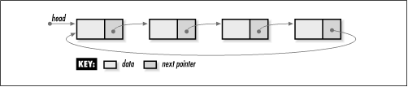

5.8 Description of Circular
Lists
The circular list is another form
of linked list that provides additional flexibility in
traversing elements. A circular list may be singly-linked or
doubly-linked, but its distinguishing
feature is that it has no tail. In a circular list, the next pointer of the last element
points back to its first element rather than to NULL. In the
case of a doubly-linked circular list, the prev pointer of the first element is
set to point to the last element as well.
Whether dealing with a singly-linked or
doubly-linked circular list, we never need to worry about
reaching an element from which we can traverse no further as
we move from element to element. Instead, the traversal simply
continues back to the first element, or, in the case of a
doubly-linked circular list, back to the last element.
Traversing a list in this manner produces a circular pattern
(see Figure
5.7), hence its name.

The circular list presented in the following
sections is a singly-linked circular list. Therefore, we are
concerned only with maintaining a link from the last element
back to the first element. In practice, whether to make use of
a singly-linked circular list or one that is doubly-linked
depends on the same reasoning presented earlier for choosing
between singly-linked and doubly-linked lists that are not
circular.
|